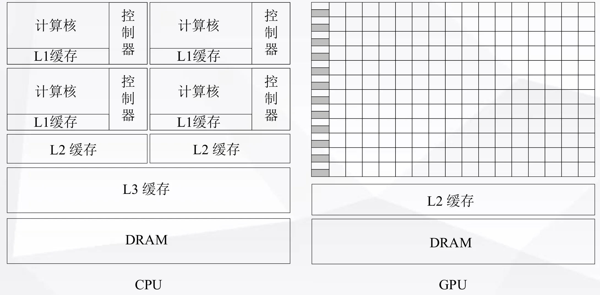
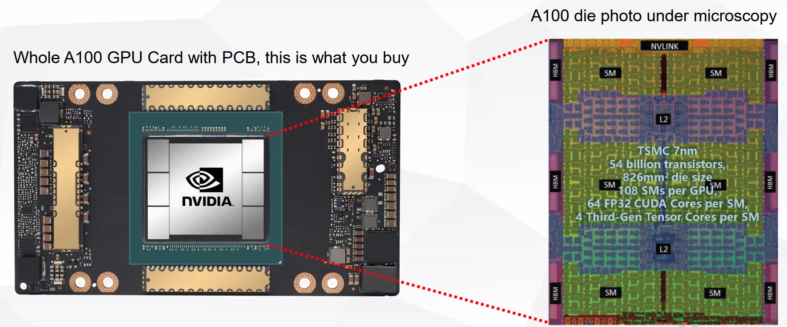
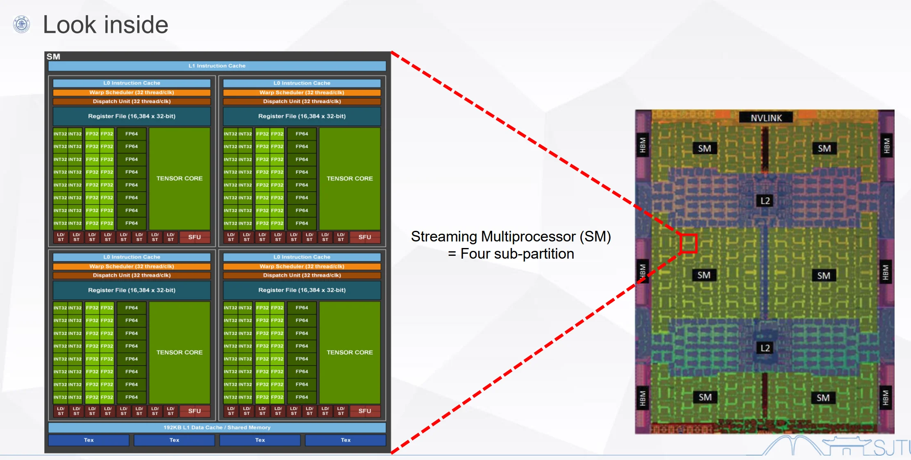

GPUGPU Architecture Overview¶
I. GPU Overview¶
1.1 Concept¶
- GPU: Graphics Processing Unit: 图形处理器，是专门为图形渲染和并行计算设计的处理器。
- GPGPU: General-Purpose Graphics Processing Units: 通用图形处理器，起源于GPU，专为并行计算而生
- Flynn terminology
- SISD, SIMD, MISD, MIMD
- Parallelism
- ILP, DLP, TLP
- Parallel architecture
- Multi-core, cluster, WSE
1.2 CPU vs. GPU¶
- Multi-core: relative a small number of cores, each one is a full-flesh processor
- Many-core: a large number of cores, each one is much smaller and simpler
- Transistors are devoted to compute-intensive processing, not caching and control
CPU 每一个核功能完整，包含计算、控制、缓存等功能；GPU 每一个核功能简化，主要用于计算，控制和缓存功能较弱。GPU 把更多的资源留给了计算，因此在处理计算任务时表现更好。

1.3 Example: NVIDIA A100¶
TSMC 7nm
54 billion transistors,
826mm2 die size
108 SMs per GPU,
64 FP32 CUDA Cores per SM,
4 Third-Gen Tensor Cores per SM
A100 Die Overview¶
- 6 个 Streaming Multiprocessor (SM)
- 6 个 High bandwith Memory (HBM)
- L2 Cache
- NVLink 用于 GPU 之间的高速通信
- PCIe 用于 GPU 与 CPU 之间的通信

Streaming Multiprocessor (SM) Overview¶
Streaming Multiprocessor (SM) = Four sub-partition
每一个 partition:
- CUDA Core: 16 FP32 cores, 16 INT32 cores, 8 FP64 cores
- Tensor Core
- LD/ST: 8 个 Load/Store 单元
- SFU: Speical Function Unit, 超越函数计算单元
- Register File: 16,384 x 32-bit
- L0 Instruction Cache
每四个 partition （即一个 SM）有一个 192 KB L1 Data Cache/Shared Memory 和 L1 Instruction Cache

II. GPU History¶
| 时间 | 类型 | 相关标准 | 代表产品 | 基本特征 | 意义 |
|---|---|---|---|---|---|
| 80年代 | 图形显示 | CGA, VGA | IBM 5150 | 光栅生成器 | 最早图形显示控制器 |
| 80年代末 | 2D加速 | GDI, DirectFB | S3 86C911 | 2D图元加速 | 开启2D图形硬件加速时代 |
| 90年代初 | 部分3D加速 | OpenGL(1.1~4.1), DirectX(6.0~11) | 3Dlabs Glint300SX | 硬件T&L | 第一颗用于PC的3D图形加速芯片 |
| 90年代后期 | 固定管线 | OpenGL(1.1~4.1), DirectX(6.0~11) | NVIDIA GeForce256 | shader功能固定 | 首次提出GPU概念 |
| 2004~2010 | 统一渲染 | OpenGL(1.1~4.1), DirectX(6.0~11) | NVIDIA G80 | 多功能shader | CUDA与G80一同发布 |
| 2011~至今 | 通用计算 | CUDA, OpenCL 1.2~2.0 | NVIDIA TESLA | 完成与图形处理无关的 | NVIDIA正式将用于计算的GPU产品线独立出来 |
III. GPGPU Overview¶
3.1 GPU 市场¶
GPU 市场分为两类：
- Desktop (桌面级)： NVIDIA, AMD, Intel
- Embedded (嵌入式)： Imagination PowerVR (曾用于 Apple), Qualcomm Adreno (曾用于 Samsung/Xiaomi), ARM Mali
3.2 NVIDIA GPGPU 演进¶
Fermi (2011) → Kepler (2012) → Maxwell (2014) → Pascal (2016) → Volta (2017) → Turing (2018) → Ampere (2020)
🚀 关键性能指标爆发的节点：¶
- Pascal (P100)： 首次搭载 HBM2 显存（显存接口从 384-bit GDDR5 提升到 4096-bit HBM2），显存带宽发生质变。
- Volta (V100)： 首次引入 Tensor Cores（张量核心），专门为 AI 深度学习矩阵运算加速。此时 FP64 双精度浮点性能也大幅提升。
- Turing (T4)： 极高能效比的 AI 推理卡。相比 V100 动辄 300W 的功耗，T4 仅有 70W，非常适合云推理。
- Ampere (A100)： 旗舰级产品，制程达到 7nm，晶体管数激增至 542 亿，Tensor Core 算力和显存（HBM2e）都达到了历代顶峰。
详细参数对比（Markdown 表格）¶
| 产品型号 (Tesla) | M2090 | K40 | M40 | P100 | V100 | T4 | A100 |
|---|---|---|---|---|---|---|---|
| GPU核心 | GF110 | GK110 | GM200 | GP100 | GV100 | TU104 | GA100 |
| 架构 | Fermi | Kepler | Maxwell | Pascal | Volta | Turing | Ampere |
| SM数量 | 16 | 15 | 24 | 56 | 80 | 40 | 108 |
| CUDA Cores | 512 | 2880 | 3072 | 3584 | 5120 | 2560 | 6912 |
| Tensor Cores | NA | NA | NA | NA | 640 | 65 (第三代) | 432 (第三代) |
| 峰值 FP32 (GFLOPS) | 1332 | 5046 | 6844 | 10609 | 15670 | 8141 | 19490 |
| 峰值 FP64 (GFLOPS) | 666.1 | 1682 | 213.9 | 5304 | 7834 | 254.4 | 9746 |
| 显存接口 | 384-bit GDDR5 | 384-bit GDDR5 | 384-bit GDDR5 | 4096-bit HBM2 | 4096-bit HBM2 | 256-bit GDDR6 | 5120-bit HBM2e |
| 显存容量 | 6GB | Up to 12GB | Up to 24GB | 16GB | 16GB | 16GB | 40GB |
| TDP (功耗) | 250 W | 235 W | 250 W | 300 W | 300 W | 70 W | 250 W |
| 晶体管 (亿) | 30 | 71 | 80 | 153 | 211 | 136 | 542 |
| 制程工艺 | 40nm | 28nm | 28nm | 16nm FinFET+ | 12nm FFN | 12nm | 7nm |